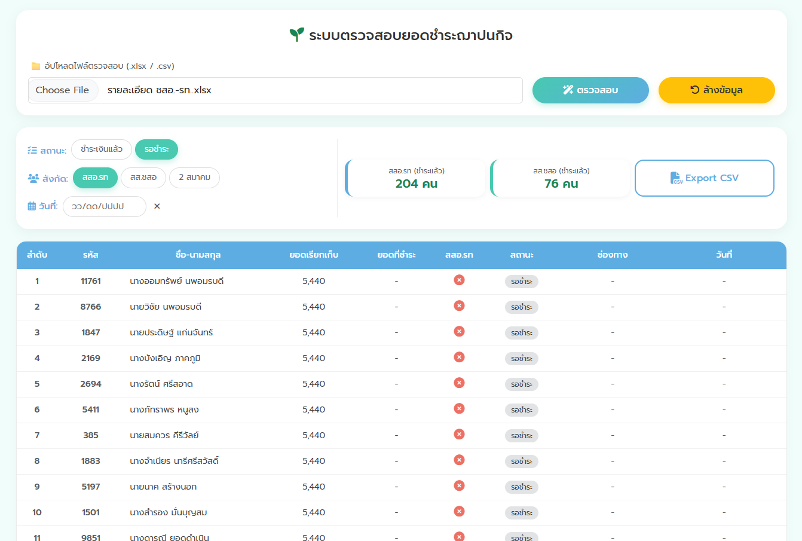

คู่มือการใช้งาน
ระบบตรวจสอบยอดชำระฌาปนกิจ
ระบบนี้ใช้สำหรับตรวจสอบสถานะการชำระเงินฌาปนกิจ โดยการอัปโหลดไฟล์ข้อมูล (.xlsx หรือ .csv) ระบบจะทำการประมวลผลและแสดงสถานะ แยกตามประเภทสมาชิก (สสอ.รท และ สส.ชสอ)
(คลิกที่รูปภาพเพื่อขยายดูภาพขนาดใหญ่)
1
การนำเข้าข้อมูล (Upload)
เริ่มต้นการใช้งานโดยการนำไฟล์ข้อมูลเข้าสู่ระบบ:
- กดที่ปุ่ม Choose File
- เลือกไฟล์ข้อมูลจากเครื่องคอมพิวเตอร์ (รองรับไฟล์ .xlsx หรือ .csv)
- เมื่อเลือกไฟล์แล้ว ชื่อไฟล์จะปรากฏในช่อง
- กดปุ่มสีฟ้า ตรวจสอบ เพื่อเริ่มประมวลผล

2
การดูภาพรวมและสรุปผล (Dashboard)
เมื่อกดตรวจสอบแล้ว ระบบจะแสดงสรุปจำนวนผู้ที่ชำระเงินแล้วที่ด้านบน:
- สสอ.รท (ชำระแล้ว): จำนวนสมาชิก สสอ.รท ที่ชำระเงินแล้ว (ตัวเลขสีเขียว)
- สส.ชสอ (ชำระแล้ว): จำนวนสมาชิก สส.ชสอ ที่ชำระเงินแล้ว (ตัวเลขสีเขียว)

3
การกรองข้อมูล (Filter)
ใช้ปุ่มตัวกรองด้านซ้ายบนเพื่อดูข้อมูลเฉพาะกลุ่ม:
1. ดูเฉพาะผู้ที่ชำระแล้ว:
คลิกปุ่ม ชำระเงินแล้ว (สีเขียว) ตารางจะแสดงเฉพาะรายการที่มียอดชำระครบถ้วน
คลิกปุ่ม ชำระเงินแล้ว (สีเขียว) ตารางจะแสดงเฉพาะรายการที่มียอดชำระครบถ้วน

2. ดูเฉพาะผู้ที่ยังไม่ชำระ:
คลิกปุ่ม รอชำระ (สีขาว) ตารางจะแสดงรายการที่ยังมียอดค้างชำระ

คลิกปุ่ม รอชำระ (สีขาว) ตารางจะแสดงรายการที่ยังมียอดค้างชำระ
4
เครื่องมือจัดการข้อมูล
ระบบมีเครื่องมือเพิ่มเติมสำหรับการจัดการข้อมูลดังนี้:
| ปุ่ม Export CSV | สำหรับดาวน์โหลดตารางข้อมูลที่แสดงอยู่ ออกมาเป็นไฟล์ CSV เพื่อนำไปใช้งานต่อ |
| ปุ่ม ล้างข้อมูล | สำหรับเคลียร์ข้อมูลทั้งหมดบนหน้าจอ เพื่อเตรียมพร้อมสำหรับการอัปโหลดไฟล์ใหม่ |
| ตัวกรองวันที่ | สามารถระบุวันที่เพื่อดูรายการที่เกิดขึ้นในวันนั้นๆ ได้ |

หมายเหตุ: ระบบจะตรวจสอบความถูกต้องของ รหัสสมาชิก และ ยอดเงิน เป็นหลัก กรุณาตรวจสอบไฟล์ต้นฉบับให้ถูกต้องก่อนการอัปโหลด